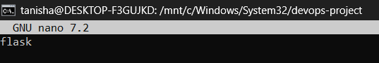
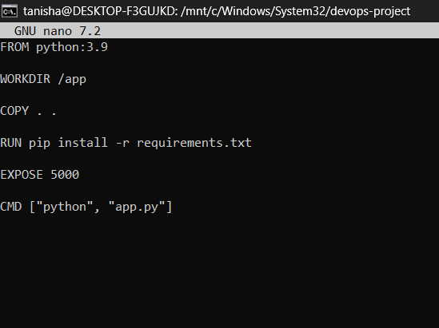

Name: Tanisha Thakur
Batch: B3
SAP ID: 500120261
| Resource | Link |
|---|---|
| 🌐 Live Project Page | Open Site |
This project demonstrates how to design, containerize, and deploy a web application using Docker.
The application consists of:
Docker is a containerization platform that allows developers to package applications and their dependencies into portable containers. Docker Compose simplifies the orchestration of multi-container applications.
This project implements a containerized web application using:
The application follows a two-tier architecture:
Client (Browser)
|
| HTTP Request (Port 5000)
v
+-------------------------------+
| Backend Container |
| Python + Flask |
| IP Address: 192.168.170.10 |
| Port: 5000 |
+-------------------------------+
|
| PostgreSQL Connection (Port 5432)
v
+-------------------------------+
| Database Container |
| PostgreSQL 15 |
| IP Address: 192.168.170.11 |
| Port: 5432 |
+-------------------------------+
|
v
+-------------------------------+
| Docker Named Volume |
| pgdata |
| /var/lib/postgresql/data |
+-------------------------------+
devops-project/ │ ├── backend/ │ ├── main.py ← Flask server (routes and API) │ ├── Dockerfile ← Backend Docker image │ ├── requirements.txt ← Python dependencies │ └── templates/ │ └── index.html ← Web UI served by Flask │ ├── database/ │ ├── Dockerfile ← Custom PostgreSQL image │ └── init.sql ← Auto-creates users table │ └── docker-compose.yml ← Orchestrates all containers
| Endpoint | Method | Description |
|---|---|---|
| / | GET | Serves the main web page |
| /api | GET | Returns backend status as JSON |
{
"message": "DevOps Project 🚀",
"status": "Backend running successfully"
}
from flask import Flask, render_template
app = Flask(__name__)
@app.route('/')
def home():
return render_template("index.html")
@app.route('/api')
def api():
return {
"message": "DevOps Project 🚀",
"status": "Backend running successfully"
}
if __name__ == '__main__':
app.run(host='0.0.0.0', port=5000)

flask

FROM python:3.9 WORKDIR /app COPY . . RUN pip install -r requirements.txt EXPOSE 5000 CMD ["python", "main.py"]

The web UI served by Flask at http://localhost:5000

FROM postgres:15-alpine ENV POSTGRES_DB=mydb ENV POSTGRES_USER=myuser ENV POSTGRES_PASSWORD=mypassword COPY init.sql /docker-entrypoint-initdb.d/ EXPOSE 5432

CREATE TABLE IF NOT EXISTS users( id SERIAL PRIMARY KEY, name TEXT );

version: "3.9"
services:
backend:
build: ./backend
container_name: pa1_backend
ports:
- "5000:5000"
environment:
DB_HOST: db
POSTGRES_USER: myuser
POSTGRES_PASSWORD: mypassword
POSTGRES_DB: mydb
depends_on:
- db
networks:
ipvlan_net:
ipv4_address: 192.168.170.10
db:
image: postgres:15-alpine
container_name: pa1_db
environment:
POSTGRES_USER: myuser
POSTGRES_PASSWORD: mypassword
POSTGRES_DB: mydb
volumes:
- pgdata:/var/lib/postgresql/data
- ./database/init.sql:/docker-entrypoint-initdb.d/init.sql
networks:
ipvlan_net:
ipv4_address: 192.168.170.11
networks:
ipvlan_net:
external: true
volumes:
pgdata:

IPvlan networking is used to assign static IP addresses to containers. IPvlan allows containers to share the host's MAC address while having their own unique IP addresses on the network.
docker network create \ -d ipvlan \ --subnet=192.168.160.0/20 \ --gateway=192.168.160.1 \ -o ipvlan_mode=l2 \ -o parent=eth0 \ ipvlan_net
| Container | IP Address | Port |
|---|---|---|
| pa1_backend | 192.168.170.10 | 5000 |
| pa1_db | 192.168.170.11 | 5432 |
| Feature | IPvlan | Macvlan |
|---|---|---|
| Network Layer | Layer 3 (IP) | Layer 2 (Ethernet) |
| MAC Address | Shared host MAC | Unique MAC per container |
| Host Communication | Host can communicate | Host cannot directly access |
| Use Case | Cloud and virtualized environments | Simulating physical devices |
Why IPvlan was chosen:
mkdir devops-project cd devops-project
docker network create \ -d ipvlan \ --subnet=192.168.160.0/20 \ --gateway=192.168.160.1 \ -o ipvlan_mode=l2 \ -o parent=eth0 \ ipvlan_net
docker compose up --build -d
docker ps

Web application running at http://localhost:5000:

docker images

docker network inspect ipvlan_net

docker volume ls

The named volume pgdata ensures PostgreSQL data persists even after containers are stopped or restarted.
| Benefit | Description |
|---|---|
| Data Survival | Data persists even if containers are stopped or removed |
| Easy Backup | Volume can be backed up independently |
| Isolation | Completely isolated from the container filesystem |
# Stop containers (volume is NOT deleted) docker compose down # Confirm volume still exists docker volume ls | grep pgdata # Restart containers docker compose up -d # Volume and data still present! docker volume ls

In WSL2, containers on an IPvlan network cannot be reached directly from the Windows host due to Hyper-V virtual switch NAT isolation. All testing is done from inside the container using docker exec. This is a known limitation.
By using Docker Compose and IPvlan networking, the Flask backend and PostgreSQL database are deployed as independent containers with static IP addresses. The named volume pgdata ensures that database data remains intact across container restarts, demonstrating persistent storage in a containerized environment.